A Fully 3D-Printed Modular Cycloidal Drive Robotic Arm
Overview
This robotic manipulator is a fully 3D-printed robotic arm that utilizes custom-built cycloidal gear drives for precision motion. The goal of this project was to create an affordable robotic manipulator to be driven by compact modular joints capable of generating high torque while also permitting back-drivability.
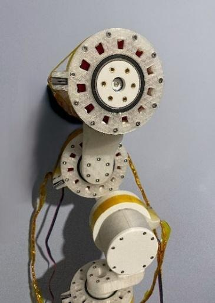
Gearbox design and first iterations
The first gearbox iteration was designed to be compact and maintain a high reduction ratio (21:1) while having 2 separate cycloidal disks working at a 180° phase to minimize weight imbalances and maximize the disks’ contact area to ensure smooth motion without excessive backlash. I experimented with different tooth profiles and printing tolerances to optimize performance. Several iterations were tested, adjusting gear meshing and reducing friction losses. Once the tolerances were refined, the first modular joint was assembled.
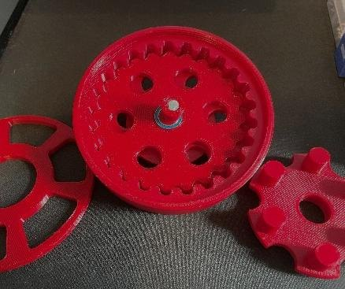
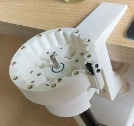
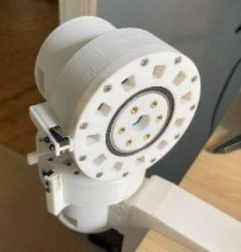
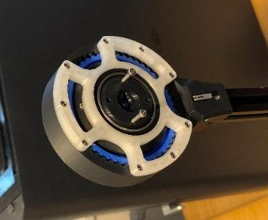
Later, the modular gearbox was redesigned to interconnect with other joints using aluminium 20x20 extrusions. The internal gearbox was upgraded to use a thicker single disk, as rotational imbalances are not an issue for this application and this would allow for the disk to be modelled with more teeth, while using the same drive shaft offset and disk diameter, enabling an improved 50:1 reduction per joint in a more compact form-factor with room to support the disk with bearings on either face.
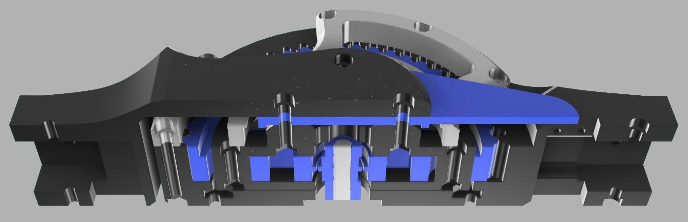
Issues with homing switches
During the initial assembly, I faced challenges with the limit switches. They were prone to snapping if the joint rotated too far (as the code was still in the testing phase and the torque produced is very high). This led to unreliable homing procedures. Instead of using more expensive and complex sensors, the solution involved redesigning the switch mounting method by changing the incision angle at which the switch is triggered to protect it from getting damaged when the joint rotates too far.
Not only did it work more consistently, but it also allowed the joints to freely rotate with a 360° range-of-motion since the homing switches were not limiting their movement anymore. Additionally, this approach enables the joints to tally the number of rotations made in software.
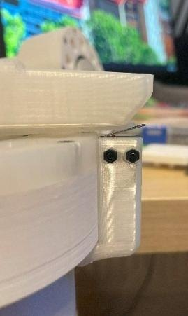
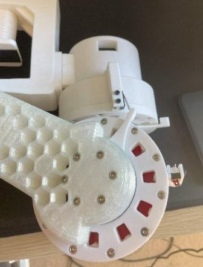
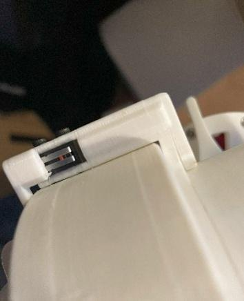
Controlling the stepper motors
The robotic arm is powered by an Arduino Uno with a stepper motor shield commonly used for CNC machines. This shield allowed me to control all stepper motors individually and use an external power supply to power them, route the various sensors to the board, and implement an emergency kill switch. One of the challenges was achieving smooth acceleration patterns in software. For this, I had to implement micro-stepping and tune motor current settings.
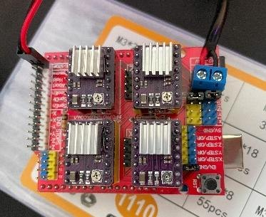
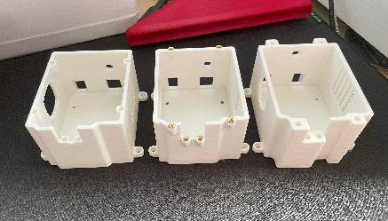
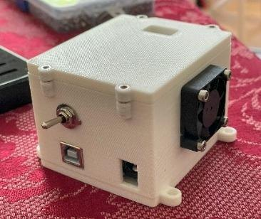
Mounting and redesign
For supporting the arm, I made an unconventional table clamp design with the adjustment wheel integrated into the clamp’s body. As the project evolved, I realized that the initial design had structural weaknesses under load, as with all four gearboxes stacked on top it added considerable weight. This prompted a redesign to improve rigidity while maintaining printability. Making it into a corner-shaped clamp with additional bracing and stronger printing strategies helped mitigate flexing and warping of the part over time.
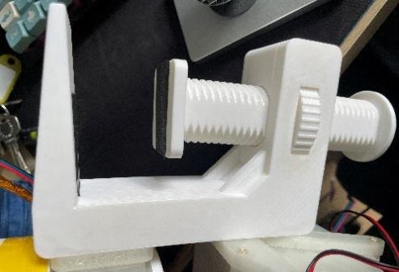
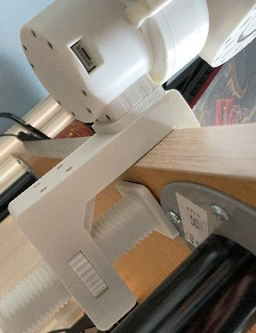
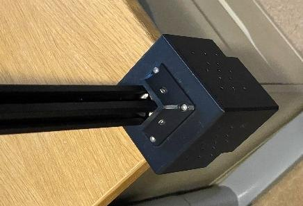
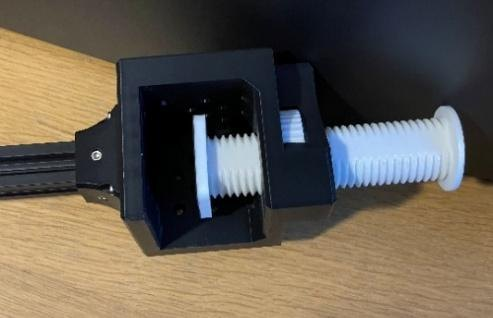